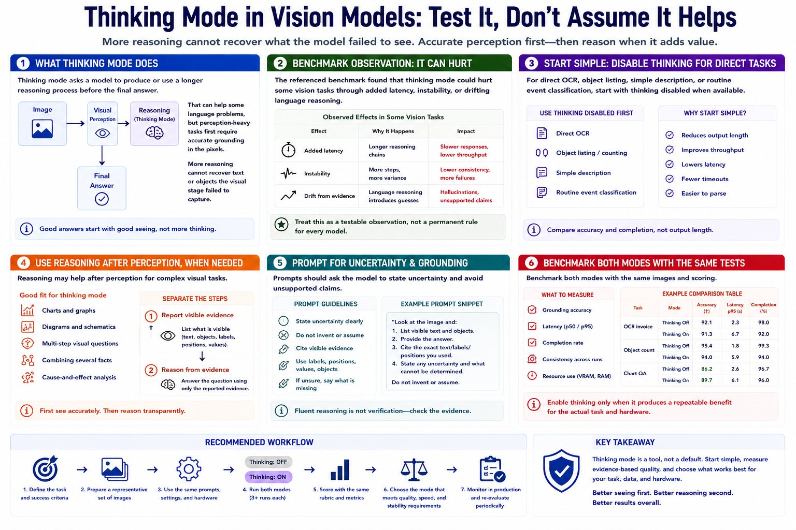

Thinking Mode and Visual Tasks
Connecting to LMS... Progress: in progress

Narration
Thinking mode asks a model to produce or use a longer reasoning process before the final answer. That can help some language problems, but perception-heavy tasks first require accurate grounding in the pixels. More reasoning cannot recover text or objects the visual stage failed to capture.
The referenced benchmark found that thinking mode could hurt some vision tasks through added latency, instability, or language reasoning that drifted away from visible evidence. Treat that as a testable observation, not a permanent rule for every model.
For direct OCR, object listing, simple description, or routine event classification, start with thinking disabled when the model supports that option. This can reduce output length and improve throughput. Compare accuracy and completion rather than assuming shorter is better.
Reasoning may help after perception for charts, diagrams, multi-step visual questions, or combining several extracted facts. A useful workflow separates the steps: first report visible evidence, then reason from the reported evidence.
Prompts should ask the model to state uncertainty and avoid unsupported claims. Review whether the explanation cites visible labels, positions, values, or objects. Fluent internal reasoning is not verification.
Benchmark both modes with the same images and scoring. Measure grounding accuracy, latency, completion, consistency, and resource use. Enable thinking only when it produces a repeatable benefit for the actual task and hardware.